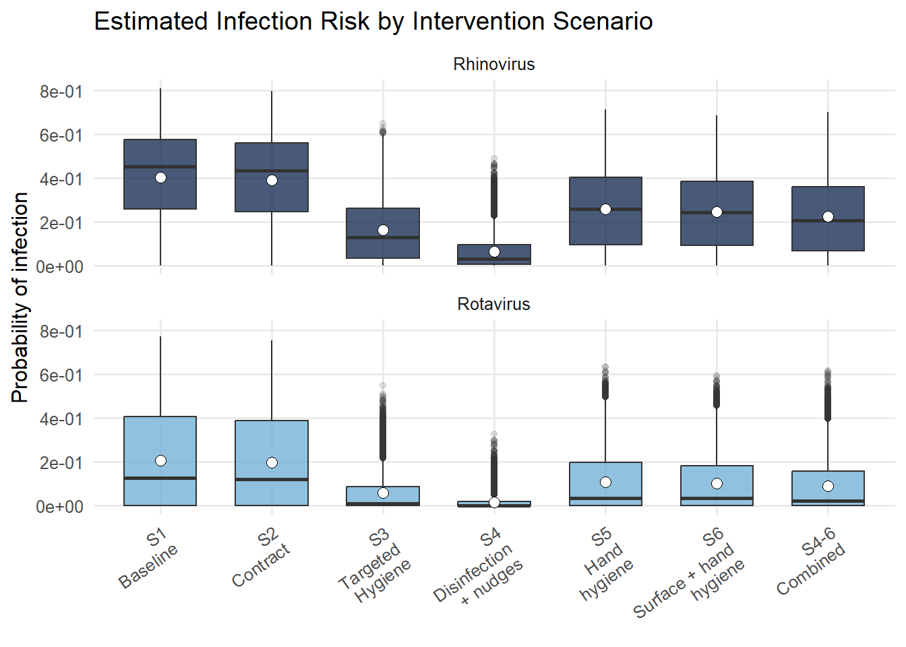
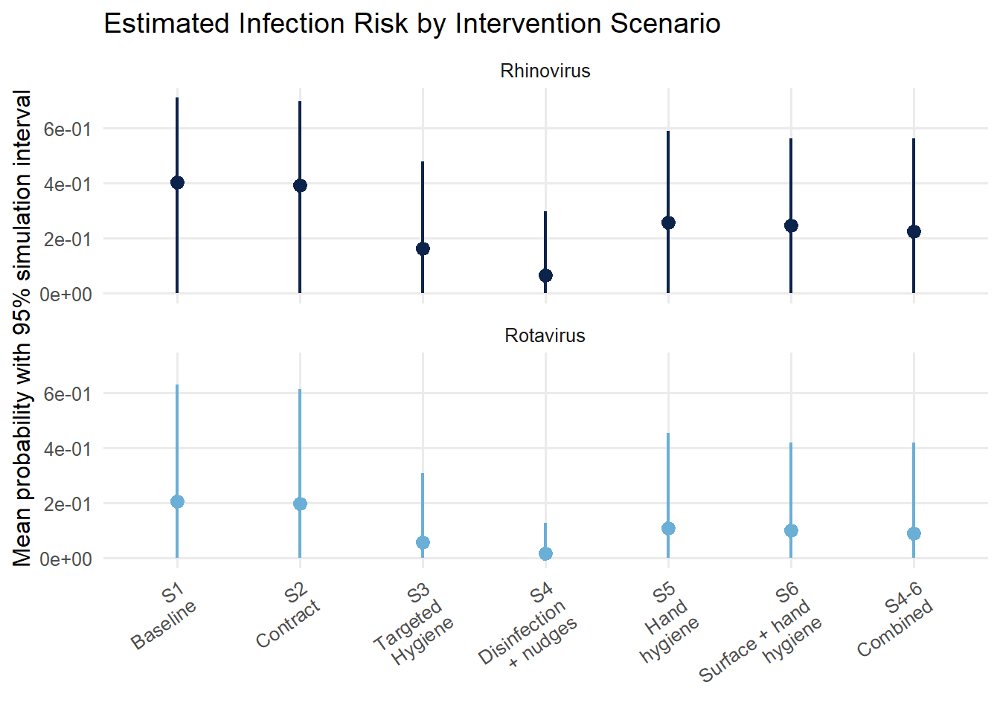

Quantifying Virus Transmission Risk and Hygiene Intervention Effectiveness in Shared Office Environments
Authors: Royani Sahaa, Jonathan D. Sextona, Ashton Normana, Yang Zhana, Amanda M. Wilsona, Sophie E. Upsonb, Shweta Malikb, Carolyn Buckleyb, Lisa M. Ackerleyb, Stephanie Cooperb, Lucas Gentb, and Kelly A. Reynoldsa
a Department of Community, Environment & Policy, 1295 N. Martin Avenue, Mel and Enid Zuckerman College of Public Health, University of Arizona, Tucson, AZ, 85724 USA
bReckitt Science and Innovation Center, Dansom Lane, Hull, East Riding of Yorkshire, HU8 7DS, United Kingdom
GitHub Repository: https://github.com/anormanaz/hand-drying-project-1.0
Set up
Parameters
Surface Area & Pathogen Transfer Efficiency
#hand-orifice contact areas
AHand <- runif(iterations, 445, 535)
AMouth <-runif(iterations, 1, 41)
AEye <-runif(iterations, 0.1, 2)
ANose <-runif(iterations, 0.1, 10)
#pathogen transfer efficiency hand-to-orifice
TEorif_mean <- 0.339
TEorif_SD <- 0.1318
F23mean <- 0.339
F23SD <- 0.1318
F23<-rtrunc(iterations,"norm",a=0,b=1,mean=F23mean,sd=F23SD)
TEorif<-rtrunc(iterations,"norm",a=0,b=1,mean=TEorif_mean,sd=TEorif_SD)Contact Frequencies
Hand-orifice contact rates were modeled using a hurdle approach to preserve the proportion of zero-contact trials. Nonzero contact rates were fit to lognormal distributions and capped at the 99th percentile to avoid unlikely upper-tail values.
Show code - contact data loading and distribution set up
contact_data <- na.omit(read_excel(here("Hotdesking_contact_data.xlsx")))
mouth <- contact_data$Mouth
mouth_nonzero <- mouth[mouth > 0]
eyes <- contact_data$Eyes
eyes_nonzero <- eyes[eyes > 0]
nose <- contact_data$Nose
nose_nonzero <- nose[nose>0]
#percent zeros for each orifice
percentzero_mouth <- length(mouth[mouth==0])/length(mouth)
percentzero_eyes <- length(eyes[eyes==0])/length(eyes)
percentzero_nose <- length(nose[nose==0])/length(nose)
#fit nonzeros to lognormal distribution (determined as best fit though separate testing)
fit_lnorm_mouth_nonzero <- fitdist(mouth_nonzero, "lnorm")
fit_lnorm_eyes_nonzero <- fitdist(eyes_nonzero, "lnorm")
fit_lnorm_nose_nonzero <- fitdist(nose_nonzero, "lnorm")Show code - contact parameters
#cap each non-zero distribution to 99th percentile
mouth_cap <- quantile(mouth_nonzero, 0.99)
eyes_cap <- quantile(eyes_nonzero, 0.99)
nose_cap <- quantile(nose_nonzero, 0.99)
#Hand-orifice contact rates per minute
HMouth <- ifelse(
runif(iterations) < percentzero_mouth,
0,
rtrunc(
iterations,
"lnorm",
a = 0,
b = mouth_cap,
meanlog = fit_lnorm_mouth_nonzero$estimate["meanlog"],
sdlog = fit_lnorm_mouth_nonzero$estimate["sdlog"]
)
)
HEye <- ifelse(
runif(iterations) < percentzero_eyes,
0,
rtrunc(
iterations,
"lnorm",
a = 0,
b = eyes_cap,
meanlog = fit_lnorm_eyes_nonzero$estimate["meanlog"],
sdlog = fit_lnorm_eyes_nonzero$estimate["sdlog"]
)
)
HNose <- ifelse(
runif(iterations) < percentzero_nose,
0,
rtrunc(
iterations,
"lnorm",
a = 0,
b = nose_cap,
meanlog = fit_lnorm_nose_nonzero$estimate["meanlog"],
sdlog = fit_lnorm_nose_nonzero$estimate["sdlog"]
)
)Pathogen Loading
Concentration on Person B’s hands in each scenario
#determined as LOD/n for scenario 4
LOD<-(5/3)
S1_Chand <- (rtriangle(iterations, a = 0, b = 300/2, c = 95/2))/AHand
S2_Chand <- (rtriangle(iterations, a = 25/2, b = 220/2, c = 75/2))/AHand
S3_Chand <- (rtriangle(iterations, a = 0, b = 10, c = 2.5))/AHand
S4_Chand <- (runif(iterations, min = 0, max = LOD))/AHand
S5_Chand <- (rtriangle(iterations, a = 0, b = 45/2, c = 30/2))/AHand
S6_Chand <- (rtriangle(iterations, a = 10/2, b = 26/2, c =25/2))/AHand
S4to6_Chand <- (rtriangle(iterations, a = 0, b = 45/2, c =10/2))/AHandTransfer Rates & Dose Delivered (Cumulative)
Cumulative dose delivered to target membranes, dose time = 30 min
DoseTime <- 30 #minutes
S1_RRota <- F23*S1_Chand*HMouth*AMouth*DoseTime
S2_RRota <- F23*S2_Chand*HMouth*AMouth*DoseTime
S3_RRota <- F23*S3_Chand*HMouth*AMouth*DoseTime
S4_RRota <- F23*S4_Chand*HMouth*AMouth*DoseTime
S5_RRota <- F23*S5_Chand*HMouth*AMouth*DoseTime
S6_RRota <- F23*S6_Chand*HMouth*AMouth*DoseTime
S4to6_RRota <- F23*S4to6_Chand*HMouth*AMouth*DoseTime
S1_RRhino <- F23*S1_Chand*((HMouth*AMouth)+(HEye*AEye)+(HNose*ANose))*DoseTime
S2_RRhino <- F23*S2_Chand*((HMouth*AMouth)+(HEye*AEye)+(HNose*ANose))*DoseTime
S3_RRhino <- F23*S3_Chand*((HMouth*AMouth)+(HEye*AEye)+(HNose*ANose))*DoseTime
S4_RRhino <- F23*S4_Chand*((HMouth*AMouth)+(HEye*AEye)+(HNose*ANose))*DoseTime
S5_RRhino <- F23*S5_Chand*((HMouth*AMouth)+(HEye*AEye)+(HNose*ANose))*DoseTime
S6_RRhino <- F23*S6_Chand*((HMouth*AMouth)+(HEye*AEye)+(HNose*ANose))*DoseTime
S4to6_RRhino <- F23*S4to6_Chand*((HMouth*AMouth)+(HEye*AEye)+(HNose*ANose))*DoseTimeDose Response
Infection Probabilities
Rhinovirus
Show code
S1_P_Rhino <- 1-((1+S1_RRhino*(2^(1/Rhino_alpha)-1)/Rhino_N50)^(-Rhino_alpha))
S2_P_Rhino <- 1-((1+S2_RRhino*(2^(1/Rhino_alpha)-1)/Rhino_N50)^(-Rhino_alpha))
S3_P_Rhino <- 1-((1+S3_RRhino*(2^(1/Rhino_alpha)-1)/Rhino_N50)^(-Rhino_alpha))
S4_P_Rhino <- 1-((1+S4_RRhino*(2^(1/Rhino_alpha)-1)/Rhino_N50)^(-Rhino_alpha))
S5_P_Rhino <- 1-((1+S5_RRhino*(2^(1/Rhino_alpha)-1)/Rhino_N50)^(-Rhino_alpha))
S6_P_Rhino <- 1-((1+S6_RRhino*(2^(1/Rhino_alpha)-1)/Rhino_N50)^(-Rhino_alpha))
S4to6_P_Rhino <- 1-((1+S4to6_RRhino*(2^(1/Rhino_alpha)-1)/Rhino_N50)^(-Rhino_alpha))
# Percent reductions in mean
S2_Rhino_percentreduction <- percent((mean(S1_P_Rhino)-mean(S2_P_Rhino))/mean(S1_P_Rhino), accuracy=0.01)
S3_Rhino_percentreduction <- percent((mean(S1_P_Rhino)-mean(S3_P_Rhino))/mean(S1_P_Rhino), accuracy=0.01)
S4_Rhino_percentreduction <- percent((mean(S1_P_Rhino)-mean(S4_P_Rhino))/mean(S1_P_Rhino), accuracy=0.01)
S5_Rhino_percentreduction <- percent((mean(S1_P_Rhino)-mean(S5_P_Rhino))/mean(S1_P_Rhino), accuracy=0.01)
S6_Rhino_percentreduction <- percent((mean(S1_P_Rhino)-mean(S6_P_Rhino))/mean(S1_P_Rhino), accuracy=0.01)
S4to6_Rhino_percentreduction <- percent((mean(S1_P_Rhino)-mean(S4to6_P_Rhino))/mean(S1_P_Rhino), accuracy=0.01)Show code - table formatting
rhinotable <-tibble::tibble(
`Scenario`= c(
"Scenario 1",
"Scenario 2",
"Scenario 3",
"Scenario 4",
"Scenario 5",
"Scenario 6",
"Scenarios 4-6"
),
`Min` = c(
min(S1_P_Rhino),
min(S2_P_Rhino),
min(S3_P_Rhino),
min(S4_P_Rhino),
min(S5_P_Rhino),
min(S6_P_Rhino),
min(S4to6_P_Rhino)
),
`Median` = c(
median(S1_P_Rhino),
median(S2_P_Rhino),
median(S3_P_Rhino),
median(S4_P_Rhino),
median(S5_P_Rhino),
median(S6_P_Rhino),
median(S4to6_P_Rhino)
),
`Max` = c(
max(S1_P_Rhino),
max(S2_P_Rhino),
max(S3_P_Rhino),
max(S4_P_Rhino),
max(S5_P_Rhino),
max(S6_P_Rhino),
max(S4to6_P_Rhino)
),
`Mean` = c(
mean(S1_P_Rhino),
mean(S2_P_Rhino),
mean(S3_P_Rhino),
mean(S4_P_Rhino),
mean(S5_P_Rhino),
mean(S6_P_Rhino),
mean(S4to6_P_Rhino)
),
`Percent Reduction in Mean` = c(
NA_real_,
S2_Rhino_percentreduction,
S3_Rhino_percentreduction,
S4_Rhino_percentreduction,
S5_Rhino_percentreduction,
S6_Rhino_percentreduction,
S4to6_Rhino_percentreduction
)
)
rhinotable |>
gt() |>
tab_header(title = "Infection Probabilities and Risk Reductions for Rhinovirus (multiple orifices)") |>
fmt_scientific(
columns = c(`Min`, `Median`, `Max`, `Mean`),
decimals = 2,
exp_style = "E",
force_sign_n = TRUE
) |>
fmt_percent(
columns = `Percent Reduction in Mean`,
decimals = 2
) |>
sub_missing(
columns = everything(),
missing_text = ""
) |>
tab_style(
style = cell_text(weight = "bold"),
locations = cells_column_labels()
) |>
cols_label(`Percent Reduction in Mean`=html("Percent <br>Reduction <br>in Mean"))| Infection Probabilities and Risk Reductions for Rhinovirus (multiple orifices) | |||||
| Scenario | Min | Median | Max | Mean | Percent Reduction in Mean |
|---|---|---|---|---|---|
| Scenario 1 | 0.00E+00 | 4.52E−01 | 8.08E−01 | 4.05E−01 | |
| Scenario 2 | 0.00E+00 | 4.35E−01 | 7.96E−01 | 3.92E−01 | 3.17% |
| Scenario 3 | 0.00E+00 | 1.29E−01 | 6.49E−01 | 1.62E−01 | 59.83% |
| Scenario 4 | 0.00E+00 | 3.07E−02 | 4.89E−01 | 6.52E−02 | 83.87% |
| Scenario 5 | 0.00E+00 | 2.58E−01 | 7.12E−01 | 2.58E−01 | 36.16% |
| Scenario 6 | 0.00E+00 | 2.43E−01 | 6.84E−01 | 2.46E−01 | 39.28% |
| Scenarios 4-6 | 0.00E+00 | 2.07E−01 | 6.99E−01 | 2.25E−01 | 44.35% |
Rotavirus
Show code
S1_P_Rota <- 1-((1+S1_RRota*(2^(1/Rota_alpha)-1)/Rota_N50)^(-Rota_alpha))
S2_P_Rota <- 1-((1+S2_RRota*(2^(1/Rota_alpha)-1)/Rota_N50)^(-Rota_alpha))
S3_P_Rota <- 1-((1+S3_RRota*(2^(1/Rota_alpha)-1)/Rota_N50)^(-Rota_alpha))
S4_P_Rota <- 1-((1+S4_RRota*(2^(1/Rota_alpha)-1)/Rota_N50)^(-Rota_alpha))
S5_P_Rota <- 1-((1+S5_RRota*(2^(1/Rota_alpha)-1)/Rota_N50)^(-Rota_alpha))
S6_P_Rota <- 1-((1+S6_RRota*(2^(1/Rota_alpha)-1)/Rota_N50)^(-Rota_alpha))
S4to6_P_Rota <- 1-((1+S4to6_RRota*(2^(1/Rota_alpha)-1)/Rota_N50)^(-Rota_alpha))
# Percent reductions in mean
S2_Rota_percentreduction <- percent((mean(S1_P_Rota)-mean(S2_P_Rota))/mean(S1_P_Rota), accuracy=0.01)
S3_Rota_percentreduction <- percent((mean(S1_P_Rota)-mean(S3_P_Rota))/mean(S1_P_Rota), accuracy=0.01)
S4_Rota_percentreduction <- percent((mean(S1_P_Rota)-mean(S4_P_Rota))/mean(S1_P_Rota), accuracy=0.01)
S5_Rota_percentreduction <- percent((mean(S1_P_Rota)-mean(S5_P_Rota))/mean(S1_P_Rota), accuracy=0.01)
S6_Rota_percentreduction <- percent((mean(S1_P_Rota)-mean(S6_P_Rota))/mean(S1_P_Rota), accuracy=0.01)
S4to6_Rota_percentreduction <- percent((mean(S1_P_Rota)-mean(S4to6_P_Rota))/mean(S1_P_Rota), accuracy=0.01)Show code - table formatting
rotatable <-tibble::tibble(
`Scenario`= c(
"Scenario 1",
"Scenario 2",
"Scenario 3",
"Scenario 4",
"Scenario 5",
"Scenario 6",
"Scenarios 4-6"
),
`Min` = c(
min(S1_P_Rota),
min(S2_P_Rota),
min(S3_P_Rota),
min(S4_P_Rota),
min(S5_P_Rota),
min(S6_P_Rota),
min(S4to6_P_Rota)
),
`Median` = c(
median(S1_P_Rota),
median(S2_P_Rota),
median(S3_P_Rota),
median(S4_P_Rota),
median(S5_P_Rota),
median(S6_P_Rota),
median(S4to6_P_Rota)
),
`Max` = c(
max(S1_P_Rota),
max(S2_P_Rota),
max(S3_P_Rota),
max(S4_P_Rota),
max(S5_P_Rota),
max(S6_P_Rota),
max(S4to6_P_Rota)
),
`Mean` = c(
mean(S1_P_Rota),
mean(S2_P_Rota),
mean(S3_P_Rota),
mean(S4_P_Rota),
mean(S5_P_Rota),
mean(S6_P_Rota),
mean(S4to6_P_Rota)
),
`Percent Reduction in Mean` = c(
NA_real_,
S2_Rota_percentreduction,
S3_Rota_percentreduction,
S4_Rota_percentreduction,
S5_Rota_percentreduction,
S6_Rota_percentreduction,
S4to6_Rota_percentreduction
)
)
rotatable |>
gt() |>
tab_header(title = "Infection Probabilities and Risk Reductions for Rotavirus (hand-to-mouth transmission)") |>
fmt_scientific(
columns = c(`Min`, `Median`, `Max`, `Mean`),
decimals = 2,
exp_style = "E",
force_sign_n = TRUE
) |>
fmt_percent(
columns = `Percent Reduction in Mean`,
decimals = 2
) |>
sub_missing(
columns = everything(),
missing_text = ""
) |>
tab_style(
style = cell_text(weight = "bold"),
locations = cells_column_labels()
) |>
cols_label(`Percent Reduction in Mean`=html("Percent <br>Reduction <br>in Mean"))| Infection Probabilities and Risk Reductions for Rotavirus (hand-to-mouth transmission) | |||||
| Scenario | Min | Median | Max | Mean | Percent Reduction in Mean |
|---|---|---|---|---|---|
| Scenario 1 | 0.00E+00 | 1.27E−01 | 7.70E−01 | 2.06E−01 | |
| Scenario 2 | 0.00E+00 | 1.22E−01 | 7.53E−01 | 1.97E−01 | 4.23% |
| Scenario 3 | 0.00E+00 | 1.08E−02 | 5.47E−01 | 5.84E−02 | 71.67% |
| Scenario 4 | 0.00E+00 | 1.52E−03 | 3.26E−01 | 1.80E−02 | 91.24% |
| Scenario 5 | 0.00E+00 | 3.44E−02 | 6.35E−01 | 1.10E−01 | 46.64% |
| Scenario 6 | 0.00E+00 | 3.43E−02 | 5.92E−01 | 1.02E−01 | 50.67% |
| Scenarios 4-6 | 0.00E+00 | 2.37E−02 | 6.14E−01 | 9.16E−02 | 55.55% |
Exposure Probabilities
Probability of at least one successful transfer event to a facial orifice during the modeled exposure period
P(exposure)=1−e^RR
Rhinovirus
Show code
S1_AllOrificesExp <- 1 - exp(-S1_RRhino)
S2_AllOrificesExp <- 1 - exp(-S2_RRhino)
S3_AllOrificesExp <- 1 - exp(-S3_RRhino)
S4_AllOrificesExp <- 1 - exp(-S4_RRhino)
S5_AllOrificesExp <- 1 - exp(-S5_RRhino)
S6_AllOrificesExp <- 1 - exp(-S6_RRhino)
S4to6_AllOrificesExp <- 1 - exp(-S4to6_RRhino)
# Percent reductions in mean
S2_Rhino_expreduction <- percent((mean(S1_AllOrificesExp)-mean(S2_AllOrificesExp))/mean(S1_AllOrificesExp), accuracy=0.01)
S3_Rhino_expreduction <- percent((mean(S1_AllOrificesExp)-mean(S3_AllOrificesExp))/mean(S1_AllOrificesExp), accuracy=0.01)
S4_Rhino_expreduction <- percent((mean(S1_AllOrificesExp)-mean(S4_AllOrificesExp))/mean(S1_AllOrificesExp), accuracy=0.01)
S5_Rhino_expreduction <- percent((mean(S1_AllOrificesExp)-mean(S5_AllOrificesExp))/mean(S1_AllOrificesExp), accuracy=0.01)
S6_Rhino_expreduction <- percent((mean(S1_AllOrificesExp)-mean(S6_AllOrificesExp))/mean(S1_AllOrificesExp), accuracy=0.01)
S4to6_Rhino_expreduction <- percent((mean(S1_AllOrificesExp)-mean(S4to6_AllOrificesExp))/mean(S1_AllOrificesExp), accuracy=0.01)
rhinoexptable <-tibble::tibble(
`Scenario`= c(
"Scenario 1",
"Scenario 2",
"Scenario 3",
"Scenario 4",
"Scenario 5",
"Scenario 6",
"Scenarios 4-6"
),
`Min` = c(
min(S1_AllOrificesExp),
min(S2_AllOrificesExp),
min(S3_AllOrificesExp),
min(S4_AllOrificesExp),
min(S5_AllOrificesExp),
min(S6_AllOrificesExp),
min(S4to6_AllOrificesExp)
),
`Median` = c(
median(S1_AllOrificesExp),
median(S2_AllOrificesExp),
median(S3_AllOrificesExp),
median(S4_AllOrificesExp),
median(S5_AllOrificesExp),
median(S6_AllOrificesExp),
median(S4to6_AllOrificesExp)
),
`Max` = c(
max(S1_AllOrificesExp),
max(S2_AllOrificesExp),
max(S3_AllOrificesExp),
max(S4_AllOrificesExp),
max(S5_AllOrificesExp),
max(S6_AllOrificesExp),
max(S4to6_AllOrificesExp)
),
`Mean` = c(
mean(S1_AllOrificesExp),
mean(S2_AllOrificesExp),
mean(S3_AllOrificesExp),
mean(S4_AllOrificesExp),
mean(S5_AllOrificesExp),
mean(S6_AllOrificesExp),
mean(S4to6_AllOrificesExp)
),
`Percent Reduction in Mean` = c(
NA_real_,
S2_Rhino_expreduction,
S3_Rhino_expreduction,
S4_Rhino_expreduction,
S5_Rhino_expreduction,
S6_Rhino_expreduction,
S4to6_Rhino_expreduction
)
)
rhinoexptable |>
gt() |>
tab_header(title = "Exposure Probabilities for Rhinovirus (multiple orifices)") |>
fmt_scientific(
columns = c(`Min`, `Median`, `Max`, `Mean`),
decimals = 2,
exp_style = "E",
force_sign_n = TRUE
) |>
fmt_percent(
columns = `Percent Reduction in Mean`,
decimals = 2
) |>
sub_missing(
columns = everything(),
missing_text = ""
) |>
tab_style(
style = cell_text(weight = "bold"),
locations = cells_column_labels()
) |>
cols_label(`Percent Reduction in Mean`=html("Percent <br>Reduction <br>in Mean"))| Exposure Probabilities for Rhinovirus (multiple orifices) | |||||
| Scenario | Min | Median | Max | Mean | Percent Reduction in Mean |
|---|---|---|---|---|---|
| Scenario 1 | 0.00E+00 | 6.88E−01 | 1.00E+00 | 5.92E−01 | |
| Scenario 2 | 0.00E+00 | 6.34E−01 | 1.00E+00 | 5.70E−01 | 3.76% |
| Scenario 3 | 0.00E+00 | 6.89E−02 | 1.00E+00 | 1.58E−01 | 73.37% |
| Scenario 4 | 0.00E+00 | 1.24E−02 | 8.05E−01 | 4.24E−02 | 92.84% |
| Scenario 5 | 0.00E+00 | 2.09E−01 | 1.00E+00 | 3.18E−01 | 46.21% |
| Scenario 6 | 0.00E+00 | 1.87E−01 | 1.00E+00 | 2.92E−01 | 50.67% |
| Scenarios 4-6 | 0.00E+00 | 1.42E−01 | 1.00E+00 | 2.60E−01 | 56.12% |
Rotavirus
Show code
S1_MouthExp <- 1 - exp(-S1_RRota)
S2_MouthExp <- 1 - exp(-S2_RRota)
S3_MouthExp <- 1 - exp(-S3_RRota)
S4_MouthExp <- 1 - exp(-S4_RRota)
S5_MouthExp <- 1 - exp(-S5_RRota)
S6_MouthExp <- 1 - exp(-S6_RRota)
S4to6_MouthExp <- 1 - exp(-S4to6_RRota)
# Percent reductions in mean
S2_Rota_expreduction <- percent((mean(S1_MouthExp)-mean(S2_MouthExp))/mean(S1_MouthExp), accuracy=0.01)
S3_Rota_expreduction <- percent((mean(S1_MouthExp)-mean(S3_MouthExp))/mean(S1_MouthExp), accuracy=0.01)
S4_Rota_expreduction <- percent((mean(S1_MouthExp)-mean(S4_MouthExp))/mean(S1_MouthExp), accuracy=0.01)
S5_Rota_expreduction <- percent((mean(S1_MouthExp)-mean(S5_MouthExp))/mean(S1_MouthExp), accuracy=0.01)
S6_Rota_expreduction <- percent((mean(S1_MouthExp)-mean(S6_MouthExp))/mean(S1_MouthExp), accuracy=0.01)
S4to6_Rota_expreduction <- percent((mean(S1_MouthExp)-mean(S4to6_MouthExp))/mean(S1_MouthExp), accuracy=0.01)
Rotaexptable <-tibble::tibble(
`Scenario`= c(
"Scenario 1",
"Scenario 2",
"Scenario 3",
"Scenario 4",
"Scenario 5",
"Scenario 6",
"Scenarios 4-6"
),
`Min` = c(
min(S1_MouthExp),
min(S2_MouthExp),
min(S3_MouthExp),
min(S4_MouthExp),
min(S5_MouthExp),
min(S6_MouthExp),
min(S4to6_MouthExp)
),
`Median` = c(
median(S1_MouthExp),
median(S2_MouthExp),
median(S3_MouthExp),
median(S4_MouthExp),
median(S5_MouthExp),
median(S6_MouthExp),
median(S4to6_MouthExp)
),
`Max` = c(
max(S1_MouthExp),
max(S2_MouthExp),
max(S3_MouthExp),
max(S4_MouthExp),
max(S5_MouthExp),
max(S6_MouthExp),
max(S4to6_MouthExp)
),
`Mean` = c(
mean(S1_MouthExp),
mean(S2_MouthExp),
mean(S3_MouthExp),
mean(S4_MouthExp),
mean(S5_MouthExp),
mean(S6_MouthExp),
mean(S4to6_MouthExp)
),
`Percent Reduction in Mean` = c(
NA_real_,
S2_Rota_expreduction,
S3_Rota_expreduction,
S4_Rota_expreduction,
S5_Rota_expreduction,
S6_Rota_expreduction,
S4to6_Rota_expreduction
)
)
Rotaexptable |>
gt() |>
tab_header(title = "Exposure Probabilities for Rotavirus (hand-to-mouth transmission)") |>
fmt_scientific(
columns = c(`Min`, `Median`, `Max`, `Mean`),
decimals = 2,
exp_style = "E",
force_sign_n = TRUE
) |>
fmt_percent(
columns = `Percent Reduction in Mean`,
decimals = 2
) |>
sub_missing(
columns = everything(),
missing_text = ""
) |>
tab_style(
style = cell_text(weight = "bold"),
locations = cells_column_labels()
) |>
cols_label(`Percent Reduction in Mean`=html("Percent <br>Reduction <br>in Mean"))| Exposure Probabilities for Rotavirus (hand-to-mouth transmission) | |||||
| Scenario | Min | Median | Max | Mean | Percent Reduction in Mean |
|---|---|---|---|---|---|
| Scenario 1 | 0.00E+00 | 2.60E−01 | 1.00E+00 | 4.24E−01 | |
| Scenario 2 | 0.00E+00 | 2.48E−01 | 1.00E+00 | 4.14E−01 | 2.37% |
| Scenario 3 | 0.00E+00 | 1.85E−02 | 1.00E+00 | 1.27E−01 | 70.18% |
| Scenario 4 | 0.00E+00 | 2.57E−03 | 7.99E−01 | 3.49E−02 | 91.77% |
| Scenario 5 | 0.00E+00 | 6.12E−02 | 1.00E+00 | 2.47E−01 | 41.83% |
| Scenario 6 | 0.00E+00 | 6.11E−02 | 1.00E+00 | 2.29E−01 | 46.08% |
| Scenarios 4-6 | 0.00E+00 | 4.15E−02 | 1.00E+00 | 2.04E−01 | 51.87% |
Show code - plot formatting
infection_long <- bind_rows(
tibble(Pathogen = "Rhinovirus", Scenario = "S1\nBaseline", Probability = S1_P_Rhino),
tibble(Pathogen = "Rhinovirus", Scenario = "S2\nContract", Probability = S2_P_Rhino),
tibble(Pathogen = "Rhinovirus", Scenario = "S3\nTargeted\nHygiene", Probability = S3_P_Rhino),
tibble(Pathogen = "Rhinovirus", Scenario = "S4\nDisinfection\n+ nudges", Probability = S4_P_Rhino),
tibble(Pathogen = "Rhinovirus", Scenario = "S5\nHand\nhygiene", Probability = S5_P_Rhino),
tibble(Pathogen = "Rhinovirus", Scenario = "S6\nSurface + hand\nhygiene", Probability = S6_P_Rhino),
tibble(Pathogen = "Rhinovirus", Scenario = "S4-6\nCombined", Probability = S4to6_P_Rhino),
tibble(Pathogen = "Rotavirus", Scenario = "S1\nBaseline", Probability = S1_P_Rota),
tibble(Pathogen = "Rotavirus", Scenario = "S2\nContract", Probability = S2_P_Rota),
tibble(Pathogen = "Rotavirus", Scenario = "S3\nTargeted\nHygiene", Probability = S3_P_Rota),
tibble(Pathogen = "Rotavirus", Scenario = "S4\nDisinfection\n+ nudges", Probability = S4_P_Rota),
tibble(Pathogen = "Rotavirus", Scenario = "S5\nHand\nhygiene", Probability = S5_P_Rota),
tibble(Pathogen = "Rotavirus", Scenario = "S6\nSurface + hand\nhygiene", Probability = S6_P_Rota),
tibble(Pathogen = "Rotavirus", Scenario = "S4-6\nCombined", Probability = S4to6_P_Rota)
)
infection_long$Scenario <- factor(
infection_long$Scenario,
levels = c("S1\nBaseline", "S2\nContract", "S3\nTargeted\nHygiene",
"S4\nDisinfection\n+ nudges", "S5\nHand\nhygiene",
"S6\nSurface + hand\nhygiene", "S4-6\nCombined")
)
ggplot(infection_long, aes(x = Scenario, y = Probability, fill = Pathogen)) +
geom_boxplot(
width = 0.65,
outlier.alpha = 0.15,
alpha = 0.75
) +
stat_summary(
fun = mean,
geom = "point",
shape = 21,
size = 2.6,
fill = "white",
color = "black",
position = position_dodge(width = 0.75)
) +
facet_wrap(~Pathogen, ncol = 1) +
scale_y_continuous(
labels = scientific,
limits = c(0, NA)
) +
scale_fill_manual(values = c(
"Rhinovirus" = "#0c234b",
"Rotavirus" = "#6baed6"
)) +
labs(
title = "Estimated Infection Risk by Intervention Scenario",
x = NULL,
y = "Probability of infection"
) +
theme_minimal(base_size = 12) +
theme(
legend.position = "none",
axis.text.x = element_text(angle = 35, hjust = 1),
panel.grid.minor = element_blank()
)
Show code - plot formatting
infection_summary <- infection_long |>
group_by(Pathogen, Scenario) |>
summarise(
mean = mean(Probability),
lower = quantile(Probability, 0.025),
upper = quantile(Probability, 0.975),
.groups = "drop"
)
ggplot(infection_summary, aes(x = Scenario, y = mean, color = Pathogen)) +
geom_pointrange(
aes(ymin = lower, ymax = upper),
size = 0.6,
linewidth = 0.8
) +
facet_wrap(~Pathogen, ncol = 1) +
scale_y_continuous(
labels = scientific,
limits = c(0, NA)
) +
scale_color_manual(values = c(
"Rhinovirus" = "#0c234b",
"Rotavirus" = "#6baed6"
)) +
labs(
title = "Estimated Infection Risk by Intervention Scenario",
x = NULL,
y = "Mean probability with 95% simulation interval"
) +
theme_minimal(base_size = 12) +
theme(
legend.position = "none",
axis.text.x = element_text(angle = 35, hjust = 1),
panel.grid.minor = element_blank()
)